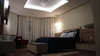
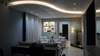
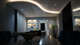
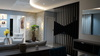
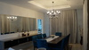
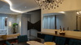
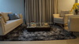
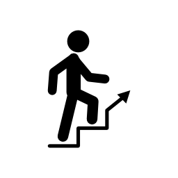

<!DOCTYPE html>
<html lang="pt-br"></html>
<!--[if lt IE 7]>      <html class="no-js lt-ie9 lt-ie8 lt-ie7"> <![endif]-->
<!--[if IE 7]>         <html class="no-js lt-ie9 lt-ie8"> <![endif]-->
<!--[if IE 8]>         <html class="no-js lt-ie9"> <![endif]-->
<!--[if gt IE 8]><!--> <html class="no-js"> <!--<![endif]-->
    <head>
        <meta charset="utf-8">
        <meta http-equiv="X-UA-Compatible" content="IE=edge">
        <title>Como funciona</title>
        <meta name="description" content="">
        <meta name="viewport" content="width=device-width, initial-scale=1">
        <link rel="stylesheet" href="">

        <!-- CONFIGURAÇÃO GALERIA -->
        <link rel="stylesheet" type="text/css" href="css/style.css" />
        <script src="js/modernizr.custom.70736.js"></script>
        <noscript>
            <link rel="stylesheet" type="text/css" href="css/noJS.css" />
        </noscript>
        <!--[if lte IE 7]><style>.main{display:none;} .support-note .note-ie{display:block;}</style><![endif]-->

        <!-- BOOTSTRAP -->
        <!-- <script src="https://ajax.googleapis.com/ajax/libs/jquery/1.12.4/jquery.min.js"></script> -->
        <script src="jquery.js"></script>
        <link href="bootstrap/css/bootstrap.css" rel="stylesheet">
        <script src="bootstrap/js/bootstrap.js"></script>


        <!-- CONFIGURAÇÃO SLICK -->
        <link rel="stylesheet" type="text/css" href="slick/slick/slick.css"/>
        <!-- Add the new slick-theme.css if you want the default styling -->
        <link rel="stylesheet" type="text/css" href="slick/slick/slick-theme.css"/>

        <script type="text/javascript" src="https://code.jquery.com/jquery-1.11.0.min.js"></script>
        <script type="text/javascript" src="https://code.jquery.com/jquery-migrate-1.2.1.min.js"></script>
        <script type="text/javascript" src="slick/slick/slick.min.js"></script>

        <script type="text/javascript" src="js/slick.js"></script>


    </head>
    <body>
        <!--[if lt IE 7]>
            <p class="browsehappy">You are using an <strong>outdated</strong> browser. Please <a href="#">upgrade your browser</a> to improve your experience.</p>
        <![endif]-->
        
        <script src="" async defer></script>

        <!-- CABEÇALHO -->
    <header>
        <nav class="navbar navbar-default">
            <div class="container">
                <!-- Brand and toggle get grouped for better mobile display -->
                <div class="navbar-header">
                    <button type="button" class="navbar-toggle collapsed" data-toggle="collapse" data-target="#bs-example-navbar-collapse-1"
                        aria-expanded="false">
                        <span class="sr-only">Toggle navigation</span>
                        <span class="icon-bar"></span>
                        <span class="icon-bar"></span>
                        <span class="icon-bar"></span>
                    </button>
                    <a class="navbar-brand" href="#">Duetos</a>
                </div>

                <!-- Collect the nav links, forms, and other content for toggling -->
                <div class="collapse navbar-collapse" id="bs-example-navbar-collapse-1">
                    <ul class="nav navbar-nav">
                        <li class="active"><a href="#">Como Funciona <span class="sr-only">(current)</span></a></li>
                        <li><a href="#">Portifólio</a></li>
                        <li><a href="#">Quem somos</a></li>
                        <li><a href="#">Contato</a></li>
                    </ul>
                </div><!-- /.navbar-collapse -->
            </div><!-- /.container-fluid -->
        </nav>
    </header>

    <!-- CORPO -->
    <main>
        <div class="container">


            <div class="slideshow">
                <div>
                    
                </div>
                <div>
                    
                </div>
                <div>
                    
                </div>
                <div>
                    
                </div>
                <div>
                    
                </div>
                <div>
                    
                </div>
                <div>
                    
                </div>
                <div>
                    
                </div>
                <div>
                    
                </div>
                <div>
                    
                </div>
                <div>
                    
                </div>
                <div>
                    
                </div>
                <div>
                    
                </div>
                <div>
                    
                </div>
                <div>
                    
                </div>
                <div>
                    
                </div>
                <div>
                    
                </div>
                <div>
                    
                </div>
                <div>
                    
                </div>
                <div>
                    
                </div>                                                
            </div>

            <div style="margin-bottom: 100px">
                <h1>
                    Veja o passo a passo para você conseguir o seu projeto
                </h1>
            </div>

            <div class="col-md-12" style="border: dotted; padding: 5px; border-color: darkgrey; border-width: thin; border-width: 2px; margin-bottom: 10px; margin-top: 10px;">
                <div class="col-md-1">
                                    
                </div>

                <div style="font-size: 10; margin-bottom: 10px;">
                    Primeiro passo
                </div>

                <div class="col-md-11">
                    O primeiro passo para realizarmos seu projeto dos sonhos é obtendo as medidas ou planta baixa cotada do seu ambiente. Caso o espaço já esteja finalizado, com azulejos e pintura, por favor nos envie também fotos!
                </div>
            </div>
            
            <div class="col-md-12" style="border: ridge; border-width: 10px; padding: 5px; margin-bottom: 10px; border-color: red">
                <div class="col-md-1">
                                    
                </div>
                <div style="font-size: 10; margin-bottom: 10px;">
                    Segundo passo
                </div>
                <div class="col-md-11">
                    Em seguida vamos realizar o briefing, onde você deve responder cada pergunta com muita atenção, pois é através das respostas que vamos analisar em qual estilo seu projeto se encaixa.
                </div>                                    
            </div>

            <div class="col-md-12" style="border: double; border-width: thick; padding: 5px; margin-bottom: 10px;">
                <div class="col-md-1">
                                    
                </div>
                <div style="font-size: 10; margin-bottom: 10px;">
                    Terceiro passo
                </div>
                <div class="col-md-11">
                    Após analisarmos seu questionário, enviamos o orçamento e assim que o pagamento for autorizado iniciamos o desenvolvimento do projeto, que deve ser concluido em dez dias uteis.
                </div>                                    
            </div>

            <div class="col-md-12" style="border: ridge;border-width: 10px; border-color:dimgrey; padding: 5px; margin-bottom: 10px;">
                <div class="col-md-1">
                                    
                </div>
                <div style="font-size: 10; margin-bottom: 10px;">
                    Quarto passo
                </div>
                <div class="col-md-11">
                    Finalizado seu projeto, marcamos uma reuniao online para a apresentação do mesmo. Ele pode ser alterado até duas vezes, caso aja necessidade posteriormente de alguma alteração, será cobrado 30% do valor do projeto.
                </div>                                    
            </div>

            <div class="col-md-12" style="border: ridge; border-width: 10px; padding: 5px; margin-bottom: 10px;">
                <div class="col-md-1">
                                    
                </div>
                <div style="font-size: 10; margin-bottom: 10px; padding-left: 60px">
                    Quinto passo
                </div>
                <div class="col-md-11" style="padding-left: 30px">
                    Com o projeto aprovado, podemos então lhe enviar todo o material necessário para que ele seja executado, ou seja, planta baixa e cortes, paginação de gesso, paginação de piso, projeto luminotécnico, distribuição de pontos elétricos e hidráulicos, projeto para marcenaria, projeto de decoração e memorial descritivo. Tudo isso junto com as imagens humanizadas do projeto a ser realizado. Chamamos esse conjuntos de informações de projeto executivo, e para lhe enviar pedimos um prazo de dez dias úteis. 
                </div>                                    
            </div>


        </div>
    </main>


    </body>
</html>